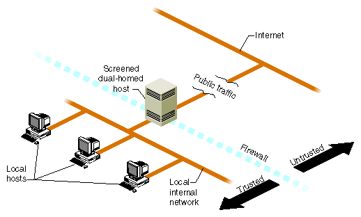
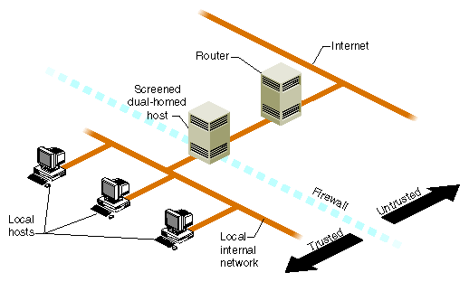
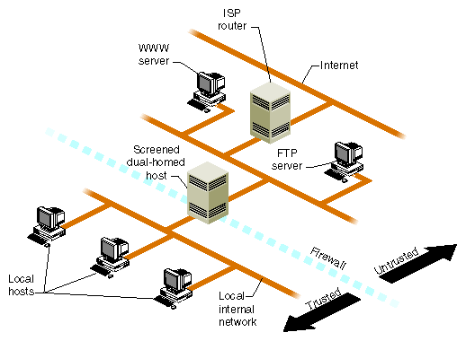

Table of Contents: Basic | Expanded
Table of Contents: Basic | Expanded
Part II, Security, contains the following chapters:
Chapter 4
IRIX System Security
This chapter deals with security of local systems. It includes the following sections:
Once you have initially established the security of a system, you can expand your secure area to include the network. But until you have local security, there is no point in trying to establish security over a larger area.
In addition, security is never finally established. Security is a dynamic process, requiring you to understand many issues, keep up to date on them, and continually monitor your systems with the many tools available. This book endeavors to provide the information you need to establish a security policy and begin its implementation.
It is one thing to secure an isolated IRIX system, another to secure a local area network, and still another to secure a site that is connected to external wide area networks such as the Internet. This chapter deals primarily with taking steps to secure an isolated system, but many of these same steps must also be taken before undertaking the more ambitious job of securing a network.
Chapter 5 discusses network security issues, which become important after the issues discussed in this chapter have been addressed to your satisfaction. If your systems are not connecting to the Internet but only to a trusted local area network, you should still read the first part of Chapter 5, "Local Area Network Access".
Note: The System Manager GUI provides Security and Access Control tasks that you can use to help manage security on your system. Refer to the Personal System Administration Guide for more information. The discussion in this chapter is based on the command-line and file interface to many of the same functions controlled with the GUI.
IRIX has several features that allow you to achieve a generally acceptable level of security without adding any new software. A great strength of the IRIX system is the ease with which users can share files and data. However, some of the security guidelines presented in this chapter are at odds with convenient system access. It is up to you, the system administrator, to balance the needs and concerns of the user community.
Standard security features of IRIX are:
Computer security is the responsibility of not only the site administrator, but of everyone who has access to a computer at the site. System users should safeguard their data by using appropriate file and directory permissions in addition to using and guarding their account passwords.
Site administrators, and to some extent system users, should be aware of the following:
For information about choosing passwords, see "Guidelines for Devising Passwords".
A pitfall of common-use accounts is that you cannot tell exactly who is responsible for actions of the account on any given workstation. Another risk is that anyone trying to break into systems at your site will try obvious account names like guest.
Common-use accounts can be helpful, but be aware that they can pose serious security problems. Needless to say, common-use accounts without passwords are especially risky.
Also, change critical passwords, including dialup passwords, whenever anyone leaves the organization. Former employees should not have access to workstations or servers at the site.
However, even with this added precaution, do not store sensitive data on workstations that have dial-up access.
Note: The file /var/adm/sulog contains a log of successful and unsuccessful attempts (indicated with a minus sign) to use the su command. By default, logging is already enabled in the /etc/default/su file.
Public-domain source code is safer than already-compiled programs, but only if you examine the code thoroughly before compiling it. Be suspicious of programs that must be installed with set-UID root in order to run.
Run networking cable through secure areas and make sure it is easy to examine regularly. Create and maintain a hard copy map of the network to make it easier to spot unauthorized taps. Another way to make this sort of attack less likely is to use fiber-optic (FDDI) network hardware, which is much more difficult to tap. For details on configuring network software securely, refer to Chapter 5.
System security under IRIX is primarily dependent on system login accounts and passwords. Proper administration, user education, and use of the facilities provided yield adequate security for most sites. Most security breaches are the result of human error and improper use of the provided security features. No extra measures yield more security if the basic features are not used or are compromised by user actions. Also, periodically log in with anonymous FTP to sgigate.sgi.com and look in the directory ~ftp/security for any security patches for your system.
Note: If you are using NFS or NIS on your system, see the discussions in "Disabling NIS (YP) on the Firewall" and "Disallowing NFS Access on the Firewall".
This discussion of password administration includes the following sections:
Managing passwords is also described in IRIX Admin: System Configuration and Operation .
Systems are most secure when nobody can access them without both an account and password, and if all the passwords on the system are difficult to guess and obtain. Unfortunately, many users choose passwords that are easy for potential intruders to guess, or write their passwords down on paper left near their workstations.
Also, many site administrators use the same password for multiple administrative accounts. This is not a good practice. Do not deliberately use the same password for more than one account.
More secure passwords are:
Easily guessed passwords are:
Your system has a facility that allows you to require a password from users who attempt to gain access to the Command (PROM) Monitor. This gives you greater control over who may perform system administration tasks.
Traditionally, if an intruder gains access to your system hardware, there is little you can do to maintain system security. In the simplest case, the intruder switches off the system, then turns it on again, and instructs the system from the console to boot a program other than your usual operating system. Alternatively, the intruder could simply remove the hard disk from your system and install it on another system and read your files. While there is nothing you can do with system software to prevent physical theft of the hardware, you can limit the ability of intruders to boot their programs or to otherwise damage your system at its lowest levels with a PROM password.
Note that if you forget your PROM password, but you still know your root password, you can reset the PROM password on most systems through the nvram command. If you cannot successfully reset the PROM password, you must remove the PROM or a jumper from your CPU board. See your Owner's Guide for information on this procedure.
To assign a new PROM password if you have forgotten it, first clear the existing PROM password from IRIX with the nvram command, and then assign a new one with the passwd command from the PROM monitor.
To clear the PROM password using the nvram(1M) command, perform the following steps:
nvram passwd_key ""
Your PROM password is now cleared.
If you wish to set your PROM password from within the Command Monitor, perform the following steps:
Starting up the system... To perform system maintenance instead, press Esc
>>
passwd
You see the prompt:
Enter new password:
Confirm new password:
Refer to "Guidelines for Devising Passwords" for help in selecting a good password.
If your system requires additional protection, you can establish a system password. If you do this, users who log in on specific ports (ttys) are prompted for a system password in addition to their account passwords. This feature cannot be imposed on the system console, or any terminal where clogin or xdm is used.
System passwords are normally used only on dialup lines and are often referred to as dialup passwords. You can use them on standard lines, but this is usually not necessary.
To establish a system password, follow these steps:
/dev/ttyd1 /dev/ttyd2 /dev/ttyd3
All possible names for ports should be listed including links. Write the file and exit from the editor.
To encrypt the password, make a backup copy of the /etc/passwd file, then change the password of some account (for example, create a new account called dialup) to get a password for use in /etc/d_passwd. Return the password file to its original state when you are finished, either by restoring the backup copy you made of /etc/passwd, or by removing the dialup account entry. (An account's encrypted password resides in the second field of /etc/passwd, or in /etc/shadow if the second field says x.)
For example, to change the password of the bin account to ``2themoon'' you enter:
passwd bin New password:
Now enter the string "2themoon" and then press Enter. The string "2themoon" is not displayed as you type it.
Next you see:
Re-enter password:
Enter the string "2themoon" again and then press Enter. The string is still not displayed as you type it.
Examine the entry for the bin account in the file /etc/passwd. You should see something like this:
bin:SaXub4uaL5NP:2:2:System Tools Owner:/bin
The second field (between the first and second colons) is the encrypted version of the password "2themoon." (What you see may be different, even with the same password, depending on the "seed" the system uses to encrypt the password.)
shell:password:
shell is the command interpreter (shell) you wish to have a password, and password is the encrypted password. Make sure that all "shells" used in /etc/passwd (the seventh and final field) are listed in this file, including those for UUCP, PPP, SLIP, and so on.
For example, this command assigns the password "2themoon," which you encrypted in the previous step, to all C shell users who log in on the ttys specified in /etc/dialups:
/bin/csh:SaXub4uaL5NP2:
You must place a colon at the end of the encrypted password, and you must enter the shell program pathname exactly as it appears in /etc/passwd.
Write the file and exit from the editor.
chmod 640 /etc/d_passwd /etc/dialups
Now, whenever C shell users log in on the ttys specified in /etc/dialups, they are prompted for the system password "2themoon" in addition to their account password.
Note that you must make similar entries for any other login shells used on your system such as /bin/ksh, /usr/local/bin/bash, and /usr/bin/tcsh.
A "shadow" password file is simply a copy of the standard password file, but it is not accessible by non-privileged users. In the standard configuration, the /etc/passwd file is publicly readable. Since the /etc/passwd file contains the encrypted versions of users' passwords, anyone can make a copy and attempt decryption of the passwords for malicious purposes. By using a shadow password file, you prevent intruders from attempting to decrypt your passwords.
The shadow password file is called /etc/shadow. Once shadow passwords have been initialized, the password field in each /etc/passwd entry is replaced by an "x" character. All standard password tools work transparently with shadow passwords. The difference should not be noticeable to your users, except that they cannot see their encrypted passwords in the /etc/passwd file.
One exception is that older applications cannot get the proper value of pw_passwd from the getpwent(3C) and getpwnam(3C) library calls. This primarily affects "screen saver" programs, unless they have root privileges.
Note: Shadow passwords work differently with NIS. See the shadow(4) reference page for details on the use of shadow passwords with NIS.
To initialize /etc/shadow (and thus invoke shadow passwords), run the pwconv command; see pwconv(1M). Once this command has been run, shadow passwords are in effect.
To update the password and shadow password files simultaneously, use the passmgmt command; see passmgmt(1M). The graphical System User Manager can also update shadow passwords if they are in effect.
The password aging mechanism forces users to change their passwords periodically. It also prevents a user from changing a new password before a specified time interval. You can also force a user to change his or her password immediately.
Note: Password aging is not supported for NIS entries (see passwd(4)).
Realistically, password aging forces users to adopt at least two passwords for their accounts. This is because, when password aging is enforced, most users alternate between two passwords that they find easy to remember rather than inventing new passwords every time their old ones expire. IRIX does not provide a utility that determines whether users are choosing from a set of passwords and, if so, then forces them to choose completely different passwords.
To set the maximum number of days that can elapse before a user must change his or her password, use the passwd(1) command with the following syntax:
passwd -x max name
The value max is the maximum number of days the password is valid for the user name. For example, this command forces user alice to change her password every 14 days:
passwd -x 14 alice
If you set max to 0, the user must change her password when she next logs in, but thereafter password aging is not in effect for her. If you set -x to -1, password aging is turned off immediately for that user.
You can also set the minimum time that must elapse before users are allowed to change their passwords. This is useful to prevent users from changing their passwords, then changing them back to their old passwords immediately. For example:
passwd -x 14 -n 7 ralph
This forces user ralph to change his password every fourteen days and prevents him from changing it more frequently than once every seven days. Note that if you set the minimum value greater than the maximum value, the user may not ever change his or her password.
To force users to change their passwords immediately, use the -f option. For example:
passwd -f trixie
Another way to enforce password aging is to edit the /etc/passwd file and insert the appropriate information after the password fields in the desired account entries.
Password aging information is appended to the encrypted password field in the /etc/passwd file. The password aging information consists of a comma and up to four bytes (characters) in the format:
,Mmww
The meaning of these fields is as follows:
All times are specified in weeks (0 through 63) by a 64-character alphabet. The following chart shows the relationship between the numerical values and character codes. Any of the character codes can be used in the four fields of the password aging information. Table 4-1 lists the password aging codes and their meanings.
| Character | Number of Weeks |
|---|---|
. (period) | 0 (zero) |
/ (slash) | 1 |
0 through 9 | 2 through 11 |
A through Z | 12 through 37 |
a through z | 38 through 63 |
Two special cases apply for the character codes:
The following example shows the password aging information required to establish a new password every two weeks (0) and to deny changing the new password for one week (/) for user ralph:
ralph:RSOE2m.E,0/:100:1:Ralph P. Cramden:/usr/people/ralph:
After ralph's first login following the change, the system automatically adds the two-character, "last-time-changed" information to the password field:
ralph:RSOE2m.E,0/W9:100:1:Ralph P. Cramden:/usr/people/ralph:
In this example, ralph changed his password in week W9. To force ralph to change his password at the next login (and to cause this only once), you can add the code ,.. to the password field:
ralph:RSOE2m.E,..:100:1:Ralph P. Cramden:/usr/people/ralph:
After ralph changes his password, the system automatically removes the aging code (,..) from the password field. To prevent ralph from changing his password, use the code ,./. Edit the /etc/passwd file and add a comma, period, and slash to the password field:
ralph:RSOE2m.E,./:100:1:Ralph P. Cramden:/usr/people/ralph:
Now only root can change the password for the ralph account. If ralph tries to change the password, he sees the message permission denied.
From time to time, you should run the pwck(1M) utility to scan the password file. This program reads the file and checks each entry for completeness and notes any inconsistencies. The password checks include validation of:
The default password file to be checked is /etc/passwd. If shadow passwords (described in "About Shadow Passwords") are enabled, the /etc/shadow file is checked.
Similarly, the grpck(1M) command verifies all entries in the /etc/group file. The default group file to be checked is /etc/group. With either command, an alternate file may be specified on the command line.
This section describes how to control special and login accounts. Special accounts are used by the system to perform specific system functions, and login accounts are user accounts allowing general-purpose system access.
Special accounts are used by daemons to perform system functions, such as spooling UUCP jobs and print requests. Because key files are owned by these accounts, someone who has obtained access to one of the accounts, or was able to start a daemon on your system, could partially breach security. Partially, because ownership of the various system files is distributed among the special accounts.
Guard access to all the special accounts as you would the root account. Either assign passwords to these accounts, or lock them using one of the methods described in "Locking Unused Logins".
Following is a list of all the administrative and special accounts on the system and what they are used for:
If a login is not used or needed, disable (lock) the login. You should not remove the account, though, because of the danger of reusing the UID in the future. User ID numbers are meant to be permanently associated with the person who used the account. If you reuse the UID number, the new user may find files that belonged to the previous owner of the ID number. These files may contain "trojan horse" programs that could damage your system. You may remove the user's home directory and files (after making a backup), but you should never remove an entry from your /etc/passwd file.
There are two ways to lock an account. The first is using the passwd command with the -l option. For example, the current entry in /etc/passwd for the user jones might look like this:
jones:6.D/N3ZFGmq7U:3333:10:Jeremiah Jones:/usr/people/jones:/bin/tcsh
The following command changes the password field of the entry in /etc/passwd for account jones to *LK*, which blocks all logins to that account:
passwd -l jones
The password field entry now looks like this:
jones:*LK*:3333:10:Jeremiah Jones:/usr/people/jones:/bin/tcsh
The second way to lock an account is by editing the password file directly. Change the password field to any string of characters that is not used by the password encryption program to create encrypted passwords. The passwd command with the -l option uses the string *LK*. You can use other strings to lock accounts.
For example, you can use a descriptive phrase such as "LOCKED;" to remind you that the account was deliberately disabled:
ralph:LOCKED;:100:1:Ralph P. Cramden:/usr/people/ralph:
The semicolon is not used in an encrypted password and causes the account to be locked. The text "LOCKED" is merely to remind you that the account is locked.
Another common method of disabling a password is to put an asterisk (*) in the password field. The default IRIX /etc/passwd file disables some unused logins this way. Be sure to check your /etc/passwd file to be sure all logins have passwords or are disabled.
You can set the following login options to enhance security:
Login options are set in the file /etc/default/login, which is a normal text file. The file contains one option specification per line. Options are described in the rest of this section. See the login(1) reference page for further details.
Because the login procedure is your system's main defense against unauthorized access, login options are important. For example, you can determine whether someone is trying to break into your system from a pattern of failed login attempts recorded in /var/adm/SYSLOG (when logging is enabled, which is the default).
The best way to keep a system secure is to slow down attempts to guess passwords and account names. The login options described in this section add delays to unsuccessful login attempts, which drastically curtails the activity of randomly guessing passwords.
Note that the visual login process clogin(1) does not provide these security options. To use the login security functions, you must turn off clogin and use the standard login processes, getty(1) and login(1). Use chkconfig to turn off the visuallogin and xdm configuration variables. See IRIX Admin: System Configuration and Operation and the visuallogin(4) reference page for information about turning the visual login process on and off. You may also use chkconfig to set the noiconlogin variable to disallow logging in using the user icons in clogin.
You can restrict root logins to a single device, forcing root users to either use that device or use the su command (thereby leaving a trail in /var/adm/sulog). For example, edit /etc/default/login to include the following line to restrict root logins to the system console:
CONSOLE=/dev/console
Note: Do not name /dev/syscon or /dev/systty as the device! These devices are the same as /dev/console, but login software does not treat them alike.
MAXTRYS is the number of times a login attempt can fail before retracting the login. Setting this parameter slows attempts by unauthorized persons to break into a system. A common method of breaking into a system is to try to guess the password of a known account. This method is most successful if the person trying to break in knows the names of as many accounts as possible, and can make guesses very quickly. If you introduce a delay in the login process after a certain number of failed login attempts on the same tty line, you can make it much more time-consuming to guess a password correctly.
To set the maximum number of login attempts, edit the file /etc/default/login. Place a line like this in the file:
MAXTRYS=4
This sets the maximum number of login attempts to four (the system default, without this option set, is three).
When the maximum number of login attempts is exceeded, the login program sleeps for a certain number of seconds (the DISABLETIME variable described in the next section), thus preventing further login attempts on that line for a while. The system default delay (DISABLETIME) is 20 seconds. This example login attempt was disabled after three tries:
login: guest password: Login incorrect login: guest password: Login incorrect login: guest password: Login incorrect
At this point, no further login prompts are displayed until the period of time specified by DISABLETIME has passed.
Use this option together with the MAXTRYS option. To set the number of seconds after which a certain number of unsuccessful login attempts a line is disabled, edit the file /etc/default/login and add a line like this:
DISABLETIME=30
This disables a line for 30 seconds. You can choose any value you consider appropriate for your system. The system default is 20 seconds.
Both successful and unsuccessful login attempts are usually recorded in the file /var/adm/SYSLOG. The default setting, which causes the system to record all attempts to log in, even successful ones, is this line in the file /etc/default/login:
SYSLOG=ALL
To record only unsuccessful login attempts, replace that line with this line:
SYSLOG=FAIL
A large number of failed logins, especially with the same account name, may indicate that someone is trying to break into that account and thus into the system. Security event auditing could help here; see Chapter 6, "Administering the System Audit Trail."
To force users without account passwords to choose their passwords immediately, add this line to the file /etc/default/login:
PASSREQ
Or instead, insert the following entry to prevent users from logging in if they do not already have a password:
MANDPASS=YES
LOCKOUT specifies the number of consecutive unsuccessful login attempts by a user after which the account is locked with passwd-lusername. (See "Locking Unused Logins" for information about account locking.)
If you set the LOCKOUT option, it is best to exempt at least the root account with the LOCKOUTEXEMPT option to prevent denial of service attacks; see login(1).
Users can help maintain system security by noticing unauthorized use of their accounts. By default, the most recent login date, time, and the name of the terminal line (tty name) or remote host from which the user logged in is displayed on login. This login attempt information is recorded in files, one per user account and with the same name as the account, in the directory /var/adm/lastlog.
Users can stop the last login information from being displayed by having a .hushlogin file in their home directory, but they should be discouraged from doing so. Remind them periodically to look at the information each time they log in for any unusual information.
The set user identification (set-UID) and set group identification (set-GID) permissions must be used very carefully. When a user runs an executable file that has either of these permissions, the system gives the user the permissions of the owner of the executable file. You can add these permissions to any executable file with the chmod(1) command.
Set-UID and set-GID programs have legitimate uses, but because they are potentially harmful, there should be very few of them on your system. Beware of programs in publicly writable directories (such as /tmp, /usr/tmp.O, /var/tmp, and /usr/spool/uucppublic) that have the same name as common systems files (such as vi and rm). One reason the PATH environment variable of the root account does not include the current directory (as does the default PATH of most other users) is so that root won't accidentally execute such "booby-trap" programs.
System security can be compromised if a user copies another program onto a file with -rwsrwxrwx permissions. To take an extreme example, if the su command has the write access permission allowed for others, anyone can copy the shell onto it and get a password-free version of su.
The following sections provide some example commands that identify files on the system with set-UID permissions. For more information about the set-UID and set-GID bits, see the chmod(1) and chmod(2) reference pages.
The following command line lists all set-UID files owned specifically by root:
find / -user root -perm -4000 -print
The results of this command are printed on the screen. All paths are checked starting at /, including all mounted directories. A great number of files will be found. It is up to you to scan these files for any unusual names. One possibility is to direct the output of this program to a file soon after installation and compare the results with later outputs. If this command reports any unusual files, investigate them immediately.
A suspicious file might turn up like this:
-r-sr-xr-x 1 root bin 38836 Aug 10 16:16 /usr/bin/at -r-sr-xr-x 1 root bin 19812 Aug 10 16:16 /usr/bin/crontab -r-sr-xr-x 1 root bin 27748 Aug 10 16:16 /usr/bin/shl ---s--x--x 1 root sys 46040 Aug 10 15:18 /usr/bin/ct -r-sr-sr-x 1 root bin 33208 Aug 10 15:55 /usr/lib/lpadmin -r-sr-sr-x 1 root bin 38696 Aug 10 15:55 /usr/lib/lpsched ---s--x--- 1 root user 45376 Aug 18 15:11 /usr/jbond/bin/sh -r-sr-xr-x 1 root sys 11416 Aug 11 01:26 /bin/mkdir -r-sr-xr-x 1 root sys 11804 Aug 11 01:26 /bin/rmdir -r-sr-xr-x 1 root bin 12524 Aug 11 01:27 /bin/df -rwsr-xr-x 1 root sys 21780 Aug 11 01:27 /bin/newgrp -r-sr-sr-x 1 root sys 23000 Aug 11 01:27 /bin/passwd -r-sr-xr-x 1 root sys 23824 Aug 11 01:27 /bin/su
In this example, the user jbond has a personal copy of /bin/sh and has made it set-UID to root. This means that anyone in the group user can execute /usr/jbond/bin/sh and become the superuser.
The following command line reports all files with a set-UID for the root filesystem (not just those owned by root) on EFS filesystems:
ncheck -s /dev/root | xargs ls -ld | cut -f2 | grep -v ~/dev/ ls -l `/etc/ncheck -s /dev/root | cut -f2 | grep -v dev`
The ncheck(1M) command, by itself, can be used on a mounted or unmounted file system. Only the superuser may use ncheck. The normal output of the ncheck -s command includes special files. Here, the grep command removes device files from the output. This filtering is applicable only for the root filesystem. The output of the modified ncheck is then used as an argument to the ls command. The filesystem must be mounted for the ls command to succeed. In this example output, nothing looks suspicious:
-r-sr-xr-x 1 root bin 12524 Aug 11 01:27 /bin/df -rwxr-sr-x 1 root sys 32272 Aug 10 15:53 /bin/ipcs -r-xr-sr-x 2 bin mail 32852 Aug 11 01:28 /bin/mail -r-sr-xr-x 1 root sys 11416 Aug 11 01:26 /bin/mkdir -rwsr-xr-x 1 root sys 21780 Aug 11 01:27 /bin/newgrp -r-sr-sr-x 1 root sys 23000 Aug 11 01:27 /bin/passwd -r-xr-sr-x 1 bin sys 27964 Aug 11 01:28 /bin/ps -r-xr-sr-x 2 bin mail 32852 Aug 11 01:28 /bin/rmail -r-sr-xr-x 1 root sys 11804 Aug 11 01:26 /bin/rmdir -r-sr-xr-x 1 root sys 23824 Aug 11 01:27 /bin/su -r-xr-sr-x 1 bin sys 21212 Aug 10 16:08 /etc/whodo
For XFS filesystems, use the find command:
find / -perm -4000 -print
This example uses the ncheck command to examine the /home partition (/dev/dsk/dks0d2s7 in this example) for files that have set-UID permissions:
/etc/ncheck -s /dev/dsk/dks0d2s7 | cut -f2
In this output below, the i-node number is given with complete pathnames for files, which start with /home, although /home is not part of the ncheck output.
/dev/dsk/dks0d2s7: 3971 /jbond/bin/sh
In the ncheck output, the program /home/jbond/bin/sh should be investigated. This program is not found in a system directory. It is a command shell residing in a user's home directory. Users should, in general, not possess set-UID binaries.
Be conservative when establishing or changing permission bit settings on all files and directories. The safest settings do not allow write access, but where this is not possible, it may be possible to limit write access to the owner of the file or directory, or at least just to the owner and the group.
The following files and directories are universally available for read and write access on IRIX as shipped. Depending on your site requirements, you may wish to change the permissions on these files to be more restrictive. See the chmod(1) reference page for a discussion on setting the sticky bit on such directories as /tmp (this is the IRIX default) to restrict removal and renaming of files.
Caution: Restricting permissions on historically open directories, such as /tmp, /usr/tmp.O, and /var/tmp (linked to /usr/tmp), can cause serious malfunctions in many programs, applications, and system utilities that write temporary files on behalf of users in these directories.
Systems should not be running the rfindd daemon, because it allows external access to file, directory, and permissions listings. See rfindd(1M) for more information.
The following accounts in your default /etc/passwd file are shipped without passwords. You should create passwords for at least the root account immediately.
Caution: Creating passwords on historically open accounts, such as lp, may cause certain related applications or operations to fail.
This section summarizes in two tables some IRIX files and commands that establish and control security. Table 4-2 lists the IRIX files concerned with security and Table 4-3 lists security-related commands.
| File | Purpose | Reference |
|---|---|---|
/etc/default/login | Control login actions | login(1) |
/etc/default/su | Define su command defaults | su(1M) |
/etc/passwd | Store password and account information | passwd(1), passwd(4) |
/etc/shadow | Hide password information | shadow(4), pwconv(1M) |
/var/adm/sulog | Log su command usage | su(1M) |
/var/adm/SYSLOG | Log system messages | syslogd(1M) |
| Command Example | Purpose | Reference |
|---|---|---|
arp -a | Display current ARP entries | arp(1M), arp(7P) |
crypt password | Encode/decode input/output | crypt(1) |
last | Indicate last logins of users and terminals | last(1) |
ncheck | Generate pathnames from i-numbers | ncheck(1M) |
passwd | Change password | passwd(1), passwd(4) |
ps -elf | Display a full, long list of every process currently running | ps(1) |
pwck | Report inconsistencies in /etc/passwd file | pwck(1M), passwd(4) |
sar | System activity reporter | sar(1), sadc(1M) |
satd | Reliably save the system audit trail | satd(1M) and "Placing the Audit Files" |
vi -x | Edit encrypted file | vi(1), crypt(1) |
w | Display users logged in with current activity | w(1) |
who | Display users logged in, their tty, and time of login | who(1) |
IRIX 6.5 and later include enhanced security features from Commercial Security Pak, namely access control lists (ACLs) and least-privilege capabilities.
An ACL works in the same way as standard file permissions, but it allows you to get a finer level of control over who may access the file or directory than standard permissions allow. ACLs allow you to specify file permissions on a user-by-user basis.
Every system file or directory has an Access Control List that governs its discretionary access. This ACL is referred to as the access ACL for the file or directory. In addition, a directory may have an associated ACL that governs the initial access for files and subdirectories created within that directory. This ACL is referred to as a default ACL. A user who wishes to gain access to the files in a directory must be on both ACLs and must be allowed by IRIX file permissions to successfully gain access. If you have not created an access ACL for a file, the default ACL serves both ACL functions.
Hereafter in this section, directories are treated as files, and where the term file is used, consider that it also applies to directories.
An ACL is stored in the same way that standard file permissions are stored; as an attribute of the file or directory. To view the ACL of a file, use the -D option to ls(1) as shown in this example:
ls -D /usr/people/ernie/testfile
The command above produces output similar to this:
testfile [user::rwx ,user:332:r--,user:ernie:rw-]
This example shows full permissions for the owner with the first entry on the line, sets read permission for user ID 332 with the second entry, and sets read/write permission for the user account ernie. The specific format of an ACL entry is discussed in the section titled "Long ACL Text Form."
To set or change an ACL, use the chacl(1) command:
chacl acl_entry[,acl_entry]...
An ACL consists of a set of ACL entries separated by commas. An ACL entry specifies the access permissions on the associated file for an individual user or a group of users. The order of internal storage of entries within an ACL does not affect the order of evaluation. To read an ACL from an object, a process must have read access to the file.To create or change an ACL, the process must own the file.
ACLs have long and short text forms. The long text form is defined first in order to give a complete specification with no exceptions. The short text form is defined afterwards because it is specified relative to the long text form.
The long text form is used for either input or output of ACLs and is set up as follows:
acl_entry[,acl_entry]...
Though it is acceptable to place more than one entry on a physical line in a file, placing only one entry per line improves readability.
Each entry contains one ACL statement with three required colon-separated fields and an optional comment:
entry tag type:entry qualifier:discretionary access permissions#comment
Comments may be included with any entry. If a comment starts at the beginning of a line, then the entire line is interpreted as a comment. The first field must always contain the ACL entry tag type.
One of the following ACL entry tag type keywords must appear in the first field:
The second field contains the ACL entry qualifier (referred to in the remainder of this section as simply qualifier). The following qualifiers are defined by default:
The third field contains the discretionary access permissions that are to apply to the user or group specified in the first field. The discretionary access permissions field must contain exactly one each of the following characters in the following order:
Any or all of these may be replaced by the no-access dash().
A user entry with an empty qualifier specifies the access granted to the file owner. A user entry with a uid qualifier specifies the access permissions granted to the user name matching the uid value. If the uid value does not match a user name, then the ACL entry specifies the access permissions granted to the user ID matching the uid value.
A group entry with an empty qualifier specifies the access granted to the default user group of the file owner. A group entry with a gid qualifier specifies the access permissions granted to the group name matching the gid value. If the gid value does not match a group name, then the ACL entry specifies the access permissions granted to the group ID matching the gid value. The umask and other entries contain an empty qualifier. A crosshatch (#) starts a comment on an ACL entry. A comment may start at the beginning of a line, or after the required fields and after any custom-defined, colon-separated fields. The end of the line denotes the end of the comment.
If an ACL entry contains permissions that are not also contained in the umask entry, then the output text form for that entry must be displayed as described above followed by a crosshatch (#), the string "effective:" and the effective file access permissions for that ACL entry.
White space is permitted (but not required) in the entries as follows:
Comments have no effect on the discretionary access check of the object with which they are associated.
Here is an example of a correct long text form ACL for a file:
user::rwx,user:332:r--,user:ernie:rw-
The above example sets full permissions for the owner with the first entry on the line, sets read permission for user ID 332 with the second entry, and sets read/write permission for the user account ernie.
Here are some examples with comments:
group:10:rw-# User Group 10 has read/write access other::---# No one else has any permission mask::rw-# The maximum permission except for the owner is read/write
The short text form is used by the chacl(1) command for input of ACLs, and is set up as follows:
acl_entry[,acl_entry]...
Though it is acceptable to place more than one entry on a physical line in a file, placing only one entry per line improves readability.
Each command line contains one ACL entry, with the exception that the ACL entry tag type keyword must appear in the first field in either its full unabbreviated form or its single-letter abbreviated form.
The abbreviation for user is u, the abbreviation for group is g. The abbreviation for other is o, and the abbreviation for mask is m.
There are no exceptions for the second field in the short text form for ACLs. The discretionary access permissions must appear in the third field in either absolute symbolic form or relative symbolic form.
The relative symbolic form must be preceded by a plus sign (+) to indicate additional access or a caret (^) to indicate that access is to be removed. The relative symbolic string must be at least one character.
The symbolic string contains at most one each of the following characters in any order:
For example, the short form should look very similar to the following:
u: :rwx # The file owner has complete access u:332:+r # User Acct 332 has read access only g:10:rw- # User Group 10 has read/write access u:653:^w # User Acct 653 (who is in group 10) has read access only o::--- # No one else has any permission m::rw- # The maximum permission except for the owner is read/write
You can use the output from the ls -D command as the input to chacl. This is convenient for situations where you wish to duplicate a complex custom ACL onto a new file in a directory that does not use the complex ACL as the default. Consider this example:
ls -dD testdir
The command given above produces the following output:
testdir [u::rwx,g::r-x,o::--x/u::rwx,g::r-x,o::---]
Create a new directory (it doesn't matter where) with this command:
mkdir newdir
Then use the following command to edit and copy the ACL (give this command all on one line):
chacl -b `ls -dD testdir | cut -d"[" -f2 | cut -d"/" -f1``ls -dD testdir | cut -d"[" -f2 | cut -d"/" -f2 | cut -d"]" -f1`newdir
The ACL from testdir will be replicated in newdir. Note that the cut command is used within the above command line. For complete information on the correct use of cut in any command line, see the cut(1) reference page. After giving the above command, an ACL listing of newdir shows that the ACL from testdir has been duplicated:
ls -dD newdir newdir [u::rwx,g::r-x,o::--x/u::rwx,g::r-x,o::---]
Note that the cut and paste functions of the window manager can also be used to duplicate ACL entries from ls -D to chacl.
Capabilities are privileges assigned to specific accounts to allow those accounts to perform operations formerly reserved to the Superuser. To maintain the principle of least privilege, the capabilities of the Superuser account can be subdivided into various capabilities, which can be assigned to separate individual accounts. The corresponding capability is placed on sensitive executable files and programs on your system. Account capability and executable capability must be compatible for the user to execute the program. For a more technical discussion, see the capabilities(4) reference page.
The fundamental purpose of capabilities is to allow you to perform administration tasks from standard login accounts without requiring the use of Superuser or other privileged accounts. A capability endorsement may be granted to any user account, and a corresponding capability requirement attached to only those system objects that the owner of the endorsed account has a legitimate need to use. This follows the trusted systems principle of least privilege - using the lowest possible promotion of privileges necessary to get the job done. Capabilities implement least privilege both by limiting the number of users privileged to perform various tasks and by limiting the privilege to just one program, or section of code within, necessary to perform the proper action.
It is usually inappropriate to grant capabilities to ordinary users of the system. Should you decide to do so, remember the principle of least privilege: A user should have only those capabilities for which a need can be demonstrated and no others.
Capabilities provide fine-grained control over the privileges of a process. A process can be granted specific capabilities to perform privileged system calls, but not be granted general override of the system's protection scheme as is the case with a setuid root program. The IRIX capability mechanism is designed to comply with Draft 15 of the POSIX P1003.1e Draft 15 specification.
The file /etc/capability is the database of capabilities for user accounts. Here is an example:
root:all+eip:all+eip auditor:CAP_AUDIT_WRITE,CAP_AUDIT_CONTROL,CAP_KILL+eip ernie:all=:CAP_FOWNER,CAP_SETFCAP+eip casey:all=:all+eip # We trust Casey. jeff:all+eip CAP_NETWORK_MGT-eip:all+eip fred:all=:all=
Each entry consists of up to three colon-separated fields, as follows:
username : default_capability : maximum_capability
The default and maximum capability fields are of the following form:
capname,capname operator flags
The capname element(s) are taken from the list of capabilities supplied in the section titled "Capabilities in This Release."
The operator can be any one of the following:
The flags that represent the capability sets are one or more of the following:
Each field contains a list of clauses. Each clause is a space-separated list of capabilities and an operator/set statement. All characters after # to the end of the entry line are interpreted as comments and are ignored. The clauses are interpreted sequentially, as read (left to right). This means that the last operation specified for a capability within an entry is the one that counts.
Now look at the sample /etc/capability file again:
root:all+eip:all+eip auditor:CAP_AUDIT_WRITE,CAP_AUDIT_CONTROL,CAP_KILL+eip: ernie:all=:CAP_FOWNER,CAP_SETFCAP+eip casey:all=:all+eip # We trust Casey. jeff:all+eip CAP_NETWORK_MGT-eip:all+eip fred:all=:all=
In this sample file, note the following:
Every running process has three capability sets: effective, permitted, and inheritable.
Each executable file has the same three capability sets as well. These sets influence the final effective capability set of the new process created when a user invokes the program:
The effective capability set of the parent process does not influence any of the new sets, and the executable file's inheritable set defines an upper bound on the capabilities available to the new process.
The following capabilities are shipped in this distribution:
Conventional superuser, UID 0 has all privileges, capabilities are not used.
Modified superuser, capabilities are used, but root doesn't require them. When root does an operation that would have needed capabilities, a record is kept.
No superuser mode, UID 0 and the root account are not special.
Capabilities on a file are only meaningful for executable files on XFS format file systems. Capability requirements on files can be set by the System Administrator with the chcap(1M) command. The syntax is as follows:
chcap CAP, CAP, CAP file
For example, suppose you want to set capabilities to match those associated with the auditor account:
auditor:CAP_AUDIT_WRITE,CAP_AUDIT_CONTROL,CAP_KILL+eip
Use this command:
chcap CAP_AUDIT_WRITE,CAP_AUDIT_CONTROL,CAP_KILL+eip file
To list the capability requirements of a file or directory, use this command:
ls -P
The -P flag stands for "Privilege." Note that you must have the appropriate capabilities to read the file in order to read the capabilities of the file.
You can create unique capabilities at your site. Simply add the capability tag you want (it must be unique) to your /etc/capability file on the line for the user or users who are to have the capability, then use the chcap(1) command to add the capability to the files you desire.
If you believe you have experienced corruption of some capability requirements on files or directories , you can use the attrinit(1) command to restore those capability requirements.
The /etc/irixcap file is used with the attrinit command as follows:
Log in as root and change directories to the root (/) directory. Next, give this command:
attrinit -script=/etc/irixcap
Your capability integrity will be restored. The process may take a few moments.
This chapter discusses various ways to make your network more secure. In general, you may need to establish policies regarding network access within a trusted local group, and other policies regarding access to and from external, untrusted networks such as the Internet.
Note: The System Manager GUI provides a Security and Access Control tasks which you can use to help manage security on your local network. Refer to the Personal System Administration Guide for details. The discussion in this chapter is based on the command-line and file interface to many of the same functions controlled with the GUI.
This chapter contains the following sections:
Note: This chapter assumes you already have taken measures to secure your host system(s) as described in Chapter 4.
Within your local area network, you may be able to allow a degree of internetwork access that is not possible or desirable with networks outside of your control. This section discusses the use of network host and user permission files to control access within your local network.
Three files that help you control access to a host within your network are:
These three files control whether access is granted or denied when a remote host issues an rlogin(1C), rcp(1C), rsh(1C), or rdist(1) request.
When a request for access is received, the file hosts.equiv is checked, and if the host is listed in that file, and the target user account is listed in /etc/passwd, no further checking is performed and remote access is allowed. In this case, a remote user with a local user ID has equivalent access from a remote host. By default, all successful remote accesses are logged to the SYSLOG file as auth.info messages; see syslogd(1M).
Users can expand this equivalence by listing hosts and specific accounts in .rhosts files in their home directories. The root login bypasses the /etc/hosts.equiv file and uses only the /.rhosts file in the root directory for equivalence checking. If there is an entry in the /.rhosts file for root, the root user on the remote system will have root privilege on your system. For obvious reasons, this is not a secure practice. It is much more secure to handle file transfers through a non-privileged account such as guest. Note also that a .rhosts file with a system name "localhost" allows su to work without requiring passwords. Refer to su(1M) for more information.
The owner of the .rhosts file must be either the user in whose home directory it resides, or the superuser, root. If it is owned by another user, or if the file permissions allow anyone who is not the owner of the file to modify it, the contents of a user's .rhosts file are automatically disregarded for security reasons.
You may wish to disallow use of .rhosts files altogether if connecting to an untrusted network (you can add the -l option to the rshd invocation in /etc/inetd.conf and thereby disallow these files. See rshd(1M) for more information). The more secure configurations for such connections are as discussed later in this chapter under "About Network Security and Firewalls". For complete information about the /etc/hosts.equiv and .rhosts files, see the hosts.equiv(4) reference page.
The inetd process controls a number of network services that you may or may not want to support on your local area network. You can limit which services you offer and log access to those services by editing the /etc/inetd.conf file. See "Limiting inetd Services", but note that that discussion refers to limiting these services when connecting to an untrusted network. You may wish to be more lenient in your configuration of inetd if you are concerned only with determining policy for a trusted local network.
With the X Window System, workstations can run client programs transparently on other hosts on the network. This access is completely independent of controls such as login accounts and passwords and is controlled instead through X protocols.
In particular, certain system files and a user command, xhost(1), control access to the local X server. Configuration of these files and control of this command determine remote access to the server. The system control files are /var/X11/xdm/Xsession, /var/X11/xdm/Xsession.dt, and /var/X11/xdm/xdm-config. These files and the xhost command are discussed in detail in the following sections.
Note: The new default system configuration disables remote access by X servers. In earlier versions remote access was enabled by default. To change the default and allow X server access to a host, refer to "Limiting Access with the xhost Command".
When the X server starts, it first checks for the existence of an /etc/X*.hosts file. If this file does not exist (this is the IRIX default, shipped configuration), all remote host access to the local X server is disallowed, pending evaluation of the Xsession files, which occurs next. The X server next reads the /var/X11/xdm/Xsession and /var/X11/xdm/Xsession.dt files, and if they do not execute an xhost command (this is the default - the xhost + command is commented out), no remote host access to the local X server is allowed.
The default X server initialization can be modified as described in the following sections.
You can selectively allow access to remote hosts by listing their names in an /etc/X*.hosts file. For example, if the file /etc/X0.hosts contains the following line, the remote host bronx is the only workstation allowed to access the local server for X server 0:
bronx
In the above example, all other hosts are denied access to the local server at server initialization. (Assuming, that is, that no conflicting xhost command is then issued in the /var/X11/xdm/Xsession or /var/X11/xdm/Xsession.dt files at server startup or subsequently by a user.)
Note: Do not link the file X*.hosts to any other network host database, such as /etc/hosts or /etc/hosts.equiv. When the X server starts, it attempts to establish a connection to all hosts that are allowed access permission in the X*.hosts file. If this file contains a large number of hosts that are allowed access to the server, you have to wait until connections are established with each of the hosts before the server is started.
The xhost command modifies the internal state of the X server. Using xhost, you can allow or deny server access for specific hosts, or for all hosts. Note that the xhost options that affect access control can be run only from the same workstation as the server.
For example, to allow all other hosts access to the X server, remove the comment from the xhost line in /var/X11/xdm/Xsession and /var/X11/xdm/Xsession.dt. By default the entry looks like this:
# Gives anyone on any host access to this display # /usr/bin/X11/xhost +
To allow access to all remote hosts, it should look like this:
# Gives anyone on any host access to this display /usr/bin/X11/xhost +
To limit remote access to a specific server, say one named brooklyn, change the entry to look like this:
# Gives anyone on any host access to this display /usr/bin/X11/xhost +brooklyn
The following section provides more examples of xhost commands you may want to place in these files.
The xhost command can also be used interactively. To completely deny access to all hosts on your network through X protocols, use this command:
# xhost -
To allow complete access to all hosts on your network, use this command:
# xhost +
To selectively grant or deny access, specify the name of the specific host or hosts on the command line. For example, this command grants access to a host named brooklyn:
# xhost +brooklyn
(When granting access, the plus sign (+) is optional.)
This command denies access to both brooklyn and bronx:
# xhost -brooklyn -bronx
To see which hosts are currently allowed access to the server, run xhost from the command line with no options:
# xhost
You can advise users not to use xhost +, or you may delete the command from the system if it is a perceived security risk.
For even better security than the default X server configuration described in "Security and X Server Initialization", you can enable X authority. To do this, change the DisplayManager*authorize entry in /var/X11/xdm/xdm-config to say:
DisplayManager*authorize: on
This makes xdm generate "magic cookies" (put in each user's $HOME/.Xauthority file), which are then required for any X client to connect to the X server. This provides a good means of X server access control. (Note that this may already be the default on your system.)
For more information about X security and authorization, see the xsecurity(1), xhost(1), xauth(1), xserver(1), and X(1) reference pages.
After establishing your host and site security policies, you may want to connect your site to external networks such as the Internet. This section is concerned with establishing such a connection with an "untrusted" network in which you do not control security. This requires special consideration of the interface between your internal, trusted network and the external network. This interface, if it stops some untrusted traffic from entering your trusted network, is called a "firewall" and is the subject of this section. The remainder of the discussion refers specifically to connecting to the Internet, but you can also apply it to connecting to any untrusted network.
The Internet is a vast, connected network of heterogeneous computer resources, spanning the globe and growing daily. Increasingly, individuals and organizations are finding access to the Internet to be of importance for a wide variety of services and resources pertinent to their businesses and other interests, including electronic mail, access to vast information archives, and keeping abreast of current developments in a host of areas.
Undoubtedly the most recent spur to the growth of interest in Internet access is the development of the World Wide Web, which provides for both a "friendly" graphical interface to Internet resources and a standardized means of presenting and accessing them. Products designed for this market, such as WebFORCE, allow their users to establish an Internet presence that can be accessed from around the world.
The Internet presents ways to share data that you want to share, but you must take measures to protect data that you want protected. This section addresses an important aspect of this internetworked accessibility: the need to establish and maintain the security of local computers and computer networks. Specifically, computer sites have a need and a right to determine the privacy and safety of their data from competitive interests as well as outright software vandalism.
If you are connecting to the Internet, you should configure your connection so that you do not unwittingly risk the exposure or corruption of important data. You should know exactly which (if any) data you are making publicly accessible, and you should guard against the possibility of unwanted intruders gaining access to your site. The Internet has many known (and some famous) instances of unwanted intrusions, vandalism, and so on, and acknowledging and taking measures to prevent such acts is the best way to ensure that your Internet presence is a pleasurable and profitable one.
While it is beyond the scope of this chapter to detail particular instances of malicious or criminal activity on computer networks, a great deal of such information is available on the Internet itself, and makes for useful reading for those responsible for computer security (refer to "Additional Resources" for pointers to additional information).
In general, you need to establish a line of defense between your trusted computer resources (your internal network) and the computer resources publicly accessible through the Internet (the external network). This line of defense should shield you from direct, external access, and it may be as simple as a single router or computer host or as complex as multiple routers and an entire computer network. (This section is concerned with establishing the secure firewalls possible with a computer host or network, not with the limited firewall protection of a router-only configuration.) Behind this line, you choose the degree to which you want to allow internal, trusted users access to the Internet, and the degree to which external users can access internal resources.
The line between the external world of untrusted hosts and the internal world of trusted hosts is established by creating a firewall. A firewall is a combination of computer hardware and software that allows you to restrict interactions with the external network (often the Internet) to the degree you desire. The simple formula is the more access you allow, the greater the security concerns; the greater the restrictions you place on access, the easier it is to monitor and maintain security. The tradeoff is one of ease of use versus peace of mind. For system and network administrators, this often translates as balancing the wishes of users with the needs and capacities of the administrator(s).
The downside of a firewall is that employees sometimes require legitimate access to packets that are filtered for security reasons. The alternative, practiced at some sites, is to maintain a high level of security on every networked computer.
An example of a simple firewall is shown in Figure 5-1. In this illustration, a single computer host is configured with two network interfaces to become what is known as a dual-homed host - a host with a presence on each of two different networks. When it is configured as described in this chapter, it represents a single, controlled obstruction between your internal network and the Internet where you can focus your security efforts. In this chapter, the term firewall host refers to an IRIX host configured for network security. (Gauntlet for IRIX is an example of a commercial firewall implementation for IRIX - see your sales representative for details.)

Figure 5-1 : A Simple Firewall Environment
The firewall does not in any way restrict interactions on your internal network. Local hosts may share resources in the same way they did before connecting to the firewall. What is different now is how these hosts may interact with external sites as determined by your site policy - your policy determines how much or how little interaction is allowed. "Internal Network Security Configuration" presents some scenarios of how you might configure a network with a dual-homed host.
The key to administering network security is the firewall. While there are important issues concerning internal security, those issues are the same regardless of whether or not you are connected to the Internet. (See Chapter 4 for information on host security and "Local Area Network Access" for information on local network security.)
Regarding the firewall itself:
Having a firewall does little good if you fail to monitor it adequately. There are several useful tools for checking the security of a firewall:
There is the same security issue inherent in accessing software on the World Wide Web that has always been an issue when acquiring software from any unknown or untrusted source. When a user clicks on a browser button for a network resource, what is invoked is unknown. A click, for example, could download an executable file with a potential for damage. Users should be aware of this issue. If this is a serious concern at your site, you may consider isolating and limiting those hosts having World Wide Web access.
Refer to "Additional Resources" for a pointer (URL) to additional information on security issues related to the World Wide Web.
This section discusses how to configure network hardware to serve as the hardware portion of a firewall solution. (For information on how to configure Silicon Graphics software in a firewall solution, refer to "IRIX Configuration for Security".) Only setups that include an IRIX host as part of the solution are discussed, as router-only solutions tend to be too limited. A firewall host has the advantages of permitting and restricting specific applications, maintaining log files, and adding authentication to network access.
The firewall host is typically combined with a router, whether provided as part of your connection to your Internet service provider or added by you to your private configuration.
Routers, if properly configured, provide a certain degree of security by filtering IP packets. You can use your IRIX host as an IP packet filter as described in the ipfilterd(1M) reference page. Usually, routers are complete hardware devices that provide high-speed IP packet filtering. While many routers can be configured to provide IP packet-level security, they do not support such features as proxies and authentication.
Proxies are proxy servers, which provide for application specific control of network resources. Authentication is a technique you can employ to require users to verify that they are who they say they are. To add these features and more, you must have a network hardware configuration such as the IRIX host setups described in the following sections.
You can use IP packet filtering and application-level controls by combining routers with firewalls. When using a router with a firewall host, configure it to allow traffic only to the firewall host. You should filter out:
Consult with your Internet service provider to determine the packet filtering options available for your Internet connection. You can also add routers to your firewall configuration as described in the next section, and then configure your routers with additional filtering options (refer to the router vendor documentation for details). (See also "Packet Filtering Gateways," in Firewalls and Internet Security, by Cheswick and Bellovin, referenced in "Additional Resources".)
This section discusses general hardware configuration issues for the basic setup of a dual-homed host acting as the firewall, and then presents the "screened host" and "screened subnet" firewall configurations.
You can configure your Silicon Graphics host hardware for use in a firewall by making it a dual-homed gateway - that is, giving it two network connections. Figure 5-1 illustrates the general idea of using a dual-homed host as the firewall.
Creating a dual-homed host may involve, for example, adding an additional Ethernet controller board, or you may already have two Ethernet connections. For specific information on the network hardware in your system, refer to your system documentation.
A screened host scenario uses a router to screen traffic between the Internet and the external network connection of the firewall host. Routers vary, but in general, they screen IP packets for certain addresses or settings that they have been programmed to disallow. They can further limit traffic to a few ports of the firewall host. No traffic is allowed from the outside to any other host on the internal network. This is the typical connection to the Internet in which the router is provided by the Internet service provider. Figure 5-2 illustrates the basic screened host scenario.

Figure 5-2 : Screened Host
An additional level of complexity - and flexibility - is added when you expand the screened host scenario to a screened network scenario. The basic design remains the same, but the screened network receives all external traffic. Both the Internet and the internal network have access to the screened network, but traffic involving the internal network must still pass through the firewall host. This is useful for sites that want to make multiple servers available to the Internet and yet maintain a secure internal network. You could, for example, use one of the public hosts as your WWW server and another as an FTP server, depending on what you want to make available and the relative CPU loads expected.
Figure 5-3 illustrates a screened subnet.

Figure 5-3 : Screened Subnet
In the situation shown in Figure 5-3, you continue to concentrate your security efforts on the single firewall host. Remember though, that your servers outside of the firewall are more easily compromised as they are protected only by a router. Keep your private data on the internal network and forward important data collected on the public servers to an internal host. (Details on software configuration are discussed in the next section.)
This section discusses the basic network addressing configuration required on a firewall host, and then provides details on configuring IRIX software to tighten security on the host.
Note: Unless specified otherwise, all the software changes discussed in this section are to be performed on the firewall host.
A dual-homed host is configured in network software as if it were two hosts, each with a different network address and, optionally, a different name. Use separate IP addresses for the two (or more) network interfaces (see IRIX Admin: Networking and Mail ).
This section discusses various modifications you can make to the IRIX operating system software to provide increased network security. Some of these changes are highly desirable on a firewall; others are more a matter of personal choice depending on the level of security you feel is necessary. The issues discussed include why the changes must or might be made.
The following discussion of changes made to the firewall host software also applies to any host made publicly accessible, such as the WWW server and FTP server shown in the screened subnet example in Figure 5-3.
Note: Do not connect your hardware to the external network until you make the changes described in this section. When you have finished the procedures, reboot your firewall system to ensure that all changes take effect. Many of these changes do not take effect until the system is rebooted.
By default, IRIX forwards IP packets on machines with more than one network hardware interface. You must edit a kernel configuration file, run autoconfig, and then reboot to disable this default.
Follow this procedure to turn off automatic IP packet forwarding:
Change the line
int ipforwarding = 1;
to
int ipforwarding = 0;
# autoconfig -f
This creates a /unix.install file, which becomes the new /unix after the system is rebooted.
# netstat -s -p ip | grep forwarding
You should see the following:
0 packets forwarded (forwarding disabled)
If you do not see this message, repeat steps 1 through 5 until you do. (Be sure that your root filesystem has enough disk space so that the /unix.install file is being created correctly. See autoconfig(1M) for more information.)
When your system starts up, the inetd process reads the /etc/inetd.conf file for a list of TCP/IP services to support. Comment out services listed in this file that are not very secure or that you are not using.
Note: These services are being disabled on the firewall only. Services that are commented out in the system files on the firewall may still be available on your internal network - you just can't use them on the firewall host.
Follow this procedure to disable selected inetd services:
exec stream tcp nowait root /usr/etc/rexecd rexecd bootp dgram udp wait root /usr/etc/bootp bootp rstatd/1-3 dgram rpc/udp wait root /usr/etc/rpc.rstatd rstatd walld/1 dgram rpc/udp wait root /usr/etc/rpc.rwalld rwalld rusersd/1 dgram rpc/udp wait root /usr/etc/rpc.rusersd rusersd rquotad/1 dgram rpc/udp wait root /usr/etc/rpc.rquotad rquotad bootparam/1 dgram rpc/udp wait root /usr/etc/rpc.bootparamd bootparam ypupdated/1 stream rpc/tcp wait root /usr/etc/rpc.ypupdated ypupdated rexd/1 stream rpc/tcp wait root /usr/etc/rpc.rexd rexd
In other words, they should look like this:
#exec stream tcp nowait root /usr/etc/rexecd rexecd #bootp dgram udp wait root /usr/etc/bootp bootp #rstatd/1-3 dgram rpc/udp wait root /usr/etc/rpc.rstatd rstatd #walld/1 dgram rpc/udp wait root /usr/etc/rpc.rwalld rwalld #rusersd/1 dgram rpc/udp wait root /usr/etc/rpc.rusersd rusersd #rquotad/1 dgram rpc/udp wait root /usr/etc/rpc.rquotad rquotad #bootparam/1 dgram rpc/udp wait root /usr/etc/rpc.bootparamd bootparam #ypupdated/1 stream rpc/tcp wait root /usr/etc/rpc.ypupdated ypupdated #rexd/1 stream rpc/tcp wait root /usr/etc/rpc.rexd rexd
If you want details on the services you are disabling, refer to their reference pages. For example, refer to rexecd(1M) for information on the remote execution server, or rexd(1M) for information on the RPC-based remote execution server.
ftp stream tcp nowait root /usr/etc/ftpd ftpd -la telnet stream tcp nowait root /usr/etc/telnetd telnetd shell stream tcp nowait root /usr/etc/rshd rshd -L login stream tcp nowait root /usr/etc/rlogind rlogind tftp dgram udp wait guest /usr/etc/tftpd tftpd -s \
/usr/local/boot /usr/etc/boot
If you comment them out (totally disable them), they should look like this:
#ftp stream tcp nowait root /usr/etc/ftpd ftpd -l #telnet stream tcp nowait root /usr/etc/telnetd telnetd #shell stream tcp nowait root /usr/etc/rshd rshd -L #login stream tcp nowait root /usr/etc/rlogind rlogind #tftp dgram udp wait guest /usr/etc/tftpd tftpd -s \
/usr/local/boot /usr/etc/boot
To be safe, it is best to disable all those services with the comment character as shown above. (Doing so means, however, that the host can only be accessed from the local console.) Of these services, enabling rshd is probably the most dangerous, and tftpd is almost never required on a firewall. Regarding ftpd, refer to IRIX Admin: Networking and Mail . If, however, you must include any of these services, change them as indicated below so that they record a log of their use in the file /var/adm/SYSLOG:
ftp stream tcp nowait root /usr/etc/ftpd ftpd -ll shell stream tcp nowait root /usr/etc/rshd rshd -Lal tftp dgram udp wait guest /usr/etc/tftpd tftpd -s -l -h /dev/null
Note the logging options added to each daemon invocation. (For more information, refer to the reference page for any daemon you modify.)
The telnetd and rlogind entries have not been included here because remote logins can (and should) be controlled with the use of one-time passwords. One-time passwords are just that - a password that can be used once to gain access, but any future use of that same password is disallowed. There are various ways to implement one-time passwords, and how (and if) you use them at your site depends on your need for remote login capability and the degree to which you want to authenticate such logins. Refer to the Firewalls and Internet Security book referenced in "Books".
finger stream tcp nowait guest /usr/etc/fingerd fingerd -S
Or, to be more secure, you can configure fingerd with the -f option, to return just a message file. In the following example, a message has been placed in /etc/fingerd.message:
finger stream tcp nowait guest /usr/etc/fingerd fingerd -f \
/etc/fingerd.message
The contents of /etc/fingerd.message might say something like:
Thank you for your interest in XYZ company. Please contact us at xyz.email.address or 1-800-XYZ-PHON for more information.
This message is then returned for any finger access.
# killall -HUP inetd
Limit the number of users with login accounts on the firewall system as much as possible. All accounts in /etc/passwd should have a password (see passwd(1)).
Check to see if there are any /etc/hosts.equiv or $HOME/.rhosts files. These files can be configured to allow remote access without password protection, and should not be allowed on a firewall host. Refer to hosts.equiv(4) for more information.
Refer to "Password Administration" for details on host access password security.
You can limit access to the firewall host's RPC services by use of the portmap command's -a option. This allows you to specify the host(s) and/or network(s) that are allowed access to RPC-based services. Edit the file /etc/config/portmap.options to add options to the portmap command that is executed at system startup.
For example, suppose you create a /etc/config/portmap.options file with the following entries:
-a 192.0.2.0 -a 192.14.12.0
This restricts access to firewall host RPC services to hosts on the Class C networks 192.0.2 and 192.13.12.
The syntax for the -a option allows you to specify multiple network masks, network addresses, and host addresses. As usual, the fewer hosts or networks allowed access, the better the security. Refer to the reference page portmap(1M) for more information.
Because the nature of NIS (formerly called Yellow Pages) does not accommodate security needs, remove it from the firewall host:
# versions remove nfs.sw.nis
Caution: You should not run NIS on a firewall. If you must run NIS, be sure the server is secure and have the clients run ypbind with the -ypsetme option which provides some minimal security.
Exporting filesystems and remote-mounting external systems on the firewall presents security problems. You should not use NFS on a firewall - remove it with versions remove nfs.sw.nis. If for some reason you cannot do this, you have a few (less secure) options:
# chkconfig nfs off
In general, you should mount all filesystems other than your system directories with the nosuid, nodev options (refer to mount(1M)).
Log files provide useful information to the firewall administrator, recording specific or all attempts at firewall host login. The various options used to turn on logging for different daemons have been covered in the discussions on each daemon. Note that the log files must be reviewed periodically to be of use.
Log files are sensitive information and are best not stored on the firewall host. See the syslogd(1M) reference page for information on how to forward syslog messages from the firewall host to a trusted host inside the firewall.
All software on a firewall host should be watched for modification. A record of checksums of software should be kept and compared periodically to detect unauthorized changes. For this reason too, the less software installed on the firewall host the better. You should always be on the watch for such things as device files outside of /dev, and files with SUID and GUID permissions set.
You can use the versions command to display a list of system files modified since installation. For example:
# versions changed Configuration Files m = modified since initial installation ? = modification unknown blank = file is as originally installed /etc/init.d/netsite m /etc/init.d/netsite.O m /etc/init.d/netsite.N m /etc/uucp/Devices /etc/uucp/Devices.N m /var/X11/xdm/Xsession.dt /var/X11/xdm/Xsession.dt.O /var/X11/xdm/xdm-config <etc>
You can also use the versions -m command to list only modified installed files. Refer to versions(1M) for more information.
You can take great pains to make a secure firewall and then have security compromised by users ignorant of the consequences of their actions. If possible, do not allow user accounts on the firewall host. If you do allow user accounts, be sure to tell the account holders:
Even your supposedly protected internal network can be compromised by inappropriate actions of users. If, for example, a user on an internal host attaches a modem and establishes a PPP or SLIP session with an external site, you now have a situation in which the external world has two connections to your internal network - one through the firewall, but the other directly to a non-secure, internal host.
While it is beyond the scope of this section to describe how to configure your internal network, this section discusses issues of DNS and Sendmail configuration that relate specifically to firewall security. Refer to IRIX Admin: Networking and Mail for information on basic Sendmail and DNS setup.
DNS, the name service used on the Internet, should be configured for your site to give out the addresses that other sites need to contact you. This might include the address of your router, your firewall host, and any other machines you want others to be able to communicate with. In the case of a simple firewall comprised of a dual-homed host, the dual-homed host would be a DNS server, providing the address of the Internet side of its network connection. In the case of a screened subnet, the DNS server could be any of the "public" hosts in the subnet, and it could provide addresses for all of these hosts and the router.
You should also set up the DNS Mail eXchanger (MX) record to advertise the name of the host(s) responsible for mail at your site. This may be the firewall host or another host.
Do not publish internal hostnames and addresses on the firewall host. If you have a single firewall host performing multiple services, say FTP and WWW serving, use CNAME records to "alias" the services to the hostname. This makes it easy to move these services to different hosts if you want to separate them later.
This section presents some suggestions for limiting the susceptibility of your site to an attack through the electronic mail system. Internet electronic mail is based on the Simple Mail Transfer Protocol, or SMTP. The program that implements SMTP is commonly referred to as sendmail. sendmail is a large and complicated program that is frequently the subject of attack.
Your mail system should be configured cooperatively with your DNS configuration. That is, whichever machine your DNS server is advertising as your Mail eXchanger (MX) host must have its sendmail configured to accept mail for your network, and to do the appropriate thing with it once it is received. Usually that means to forward the mail to a master mail machine on the internal network, which knows users' internal addresses and how to deliver the mail to them.
A note about current convention: It is popular to use the domain name of your network as your electronic mail address. For example, user "harry" at company XYZ corporation, whose domain name is XYZ.com would have the electronic mail address "harry@XYZ.com," as opposed to "harry@machine1.XYZ.com." Edit the /etc/sendmail.cf file to do this (see IRIX Admin: Networking and Mail ).
To reinforce the electronic mail address of your site, and to make it easy for others to reply to your users' mail, it is recommended that you configure your sendmail to rewrite all your addresses to conform to the above convention.
For details on how to configure sendmail.cf, refer to IRIX Admin: Networking and Mail .
If a barrage of email is sent to your firewall host, it can fill up the disk and paralyze further operation. If you are concerned about this possibility, isolate the mail spool by putting it on a disk or disk partition of its own. While this does not prevent email from being overwhelmed, it does keep a crucial system disk partition, such as /usr, from filling up.
A proxy server is an application that implements security for a particular network service. It is basically an application-level gateway that, by "understanding" the particular application protocol, is able to transparently intercept traffic and so implement protocol-specific security, logging, authentication, and so on.
Proxy servers provided on the firewall can allow, for example, internal users to use Netscape Navigator to access the World Wide Web, to use ftp to transfer files between a host on the internal network and one on the Internet, or to telnet to an external host for an interactive session.
The two most common proxy server solutions are server-side proxies and the SOCKS proxy server. The proxy servers available with the optional Gauntlet for IRIX firewall implement server-side-only applications, in which one proxy server exists for each supported application. The SOCKS approach utilizes a socksd process on the server, and then requires any application that communicates with it to be "SOCKSified"; that is, compiled with the SOCKS library. The Netscape Navigator, for example, comes already "SOCKSified."
Refer to "Additional Resources" for information on creating your own proxy support, or contact your Silicon Graphics sales representative for information on Gauntlet for IRIX and the Netscape Proxy Server.

 Table of Contents: Basic | Expanded
Table of Contents: Basic | Expanded